المقدمة
احيانا ممكن يقابلنا مشاكل او bugs و احنا بنعدل او بنضيف Feature جديدة للكود علي عكس المتوقع و دا لأن معظمنا ك software engineers بنركز دايما اننا عايزين نطلع منتج كويس و شغال عند العميل ، بس هل فكرنا قبل كدا في quality بتاعته ك code ؟
تخيل انك بتبني عمارة علي اساس ضعيف و حبيت تضيف دور جديد للمبني هتلاقي ان المبني كله بدأ ينهار و دا بسبب الاساس الضعيف من الاول ، ف زي ما بنقول الاهم من الشغل تظبيط الشغل ، هنتعرف النهاردة عن ازاي نخلي السوفتوير بتاعنا الكواليتي بتاعته كويسة و ايه هو Code Quality و ازاي بنقيسه.
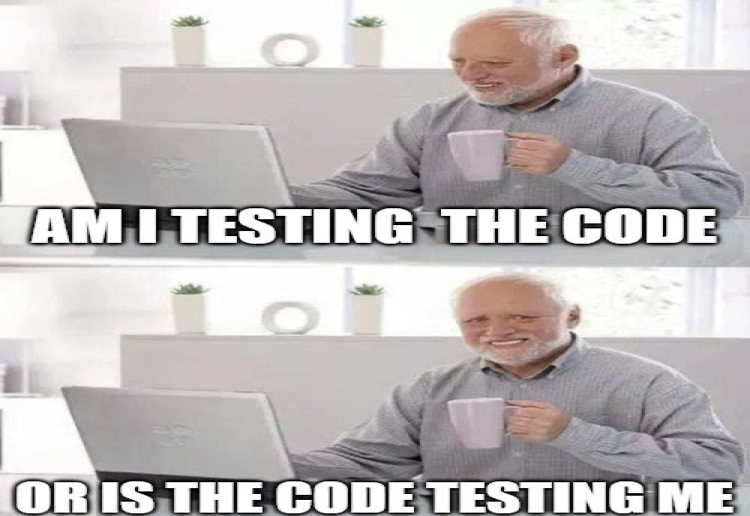
ايه هو الـ Code Quality؟
في قاعدة Lehaman’s بتقول:
يعني ايه الكلام دا بقي؟
معناه ان اي سيستم او برودكت بنعمله هنحتاج نعدل فيه سواء اننا نضيف Feature جديدة او نعدل عليها. تخيل كدا لو انت مهتمتش بجودة الكود بتاعك مش هتعرف تغير اي حاجة في السيستم من غير ما تقابل مشاكل فيه و bugs جديدة هتزود من وقت تحسينك ليه.
يبقي الCode Quality ببساطة هو انك تعمل كود يكون سهل القراءة و الفهم لما ترجعله في اي وقت.
نقدر نقول انها طريقة علشان تقيس كفاءة و مدي سهولة فهم و التعديل علي كود موجود. ونقدر نقيسه عن طريق قد ايه هو قابل للقراءة و ممكن نعيد استخدامه في اي بروجكت تاني و مدي سهولته لاي developer تاني انه يقدر يقرأه و يعدل عليه في وقت قصير.
أهمية الـ Code Quality
طيب بعد ما عرفنا يعني ايه ، ليه هو ممكن يكون مهم او ايه مدي تأثيره ؟ خلينا نشوف ..
خليك عارف ان فيه حاجتين مينفعش تثق فيهم :
- انك تكون متاح في المستقبل
- الذاكرة المستقبلية بتاعتك.
خلينا نفهم اكتر عن طريق السيناريو دا: انت بدات بروجكت كان الكود مش احسن حاجة و قلت انك هتعدله بعدين جالك Offer شغل تاني او انشغلت في بروجكت تاني معرفتش ترجع تعدل عليه و كان في تيم تاني هيشتغل فيه ممكن تسأل نفسك وقتها ، هل التيم هيكون قادر انه يعدل عليه او يفهمه بسهولة ؟
ايه اللي هيحصل اما يضيفوا تعديل جديد ؟ و ازاي هيأثر علي ال performance and bugs ؟ من هنا نقدر نستنج اهمية الـ Code Quality.
- أول حاجة بيساعد الdeveloper انه يعيد قراءة الكود ببساطة و بسهولة.
- بنقدر نتاكد ان العميل هياخد experience جيدة ومش هيشتكي من وجود اخطاء غير متوقعة.
- بيقلل الاخطاء المستقبلية و بيحسن الاداء و بيكون سهل التعديل عليه و اكتشاف الاخطاء بدري و كمان بيكون فيه security عالية.
- طول ما السوفتوير بتاعك مبيطلعش اخطاء لمدة طويلة دا هيوفر فلوس للشركة و هيوفر وقت لما يحتاج تعديل او اضافة اي Feature جديدة.
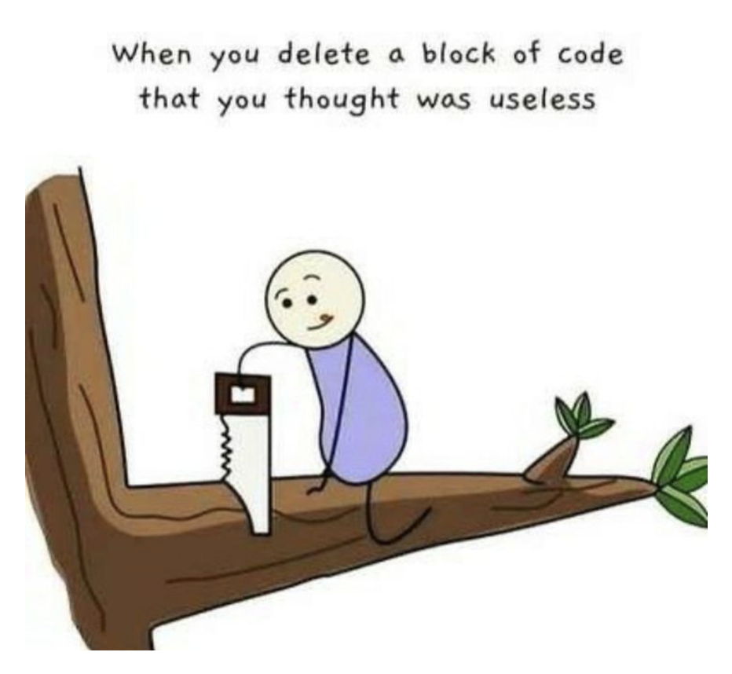
ايه هي الـ Code Quality Standards
في عوامل كتير بتأثر علي جودة الكود ف عملوا معاير من خلالها بنقدر نشوف الكود بتاعنا كويس قد ايه و ايه الجوانب اللي محتاجة تتحسن فيه. ومن ضمن المعايير دي: readability, clarity, reliability, security, modularity, etc...
انك تقدم كود جودته عالية دا شىء اساسي لكل developer وعلشان تقدر تعمل دا في قواعد او معايير بنمشي عليها علشان نقدر نحقق اعلي جودة والمعايير دي بتخلي الكود أكثر سهولة ويكون قابل للتعديل واكتشاف الاخطاء بدري فخلونا نكتشف ايه هما:
العوامل اللي بتأثر علي Code Quality:
الـ Complexity
من اسمها كدا اني بقيس مدي صعوبة الكود بتاعي من حيث هو سهل قد ايه في انه يتفهم اويتعدل عليه بعدين زي ما بنمسميه في الالجورزم Big O.
من العوامل اللي بتأثر علي قراية الكود : عدد السطور ، استخدام nested IF Conditions ، Loops .
في مثال مشهور عندنا و هو Recurrsion function الدالة اللي بتكرر نفسها او بتسدعي نفسها كذا مرة دا ابسط مثال علي انه ازاي الكود بيكون صعب انه يتفهم او يتقري بسهولة .
طيب ليه مفروض برضو اننا نحسنه ؟
لأن كل ما الكود كان بسيط و سهل بيخلي اداء البرنامج عالي و يستهلك موارد اقل من Memory , CPU و و بيكون صعب في انه نضيف تعديل جديد من غير ما يكلف الشركة فلوس اكتر.
عندنا انواع من الـ Complexity:
- Cyclomatic Complexity
- Structural Complexity
- Algorithmic Complexity
- Cognitive Complexity
خلونا نوضح بمثال الـ Cyclomatic Complexity:
دا معناه زي انه اقدر اعد عدد الطرق المختلفة اللي ممكن اروح ليها في مدينة من نقطة للتانية
زيه في الكود انه بيعد عدد الطرق اللي ممكن اروح بيها من قرار للتاني اما بستخدم if - for و هكذا.
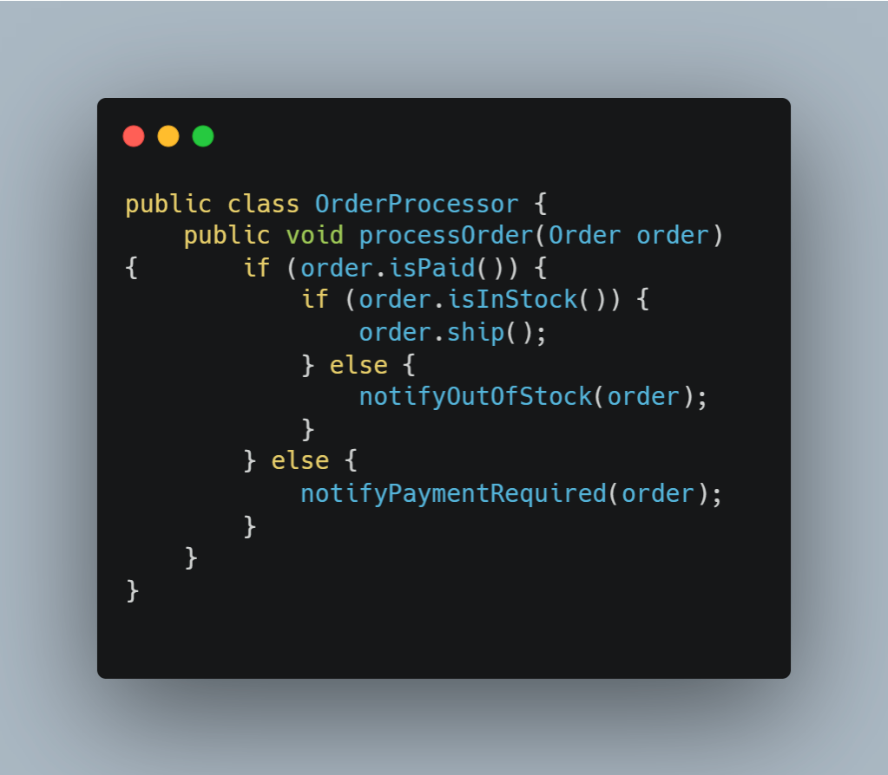
لو بصينا هنا هنلاقي الComplexity ب 3 يعني عندي 3 قرارات او 3 حالات :
- الاوردر اتدفع
- الاوردر في المخزن
- الاوردر مدفعش
الـ Cognitive Complexity: ودا ببساطة انه الشخص يقدر يقرأ الكود بسهولة.
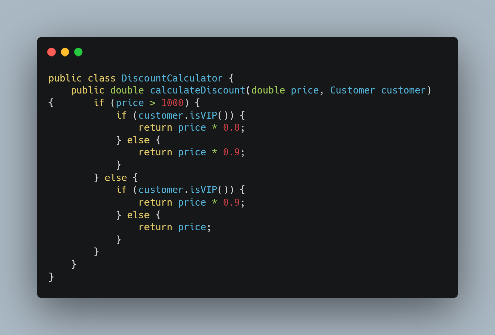
لو بصينا هنا هنلاقي انه الكود صعب انه يتقرأ من اول مرة و ممكن يتعدل كدا :
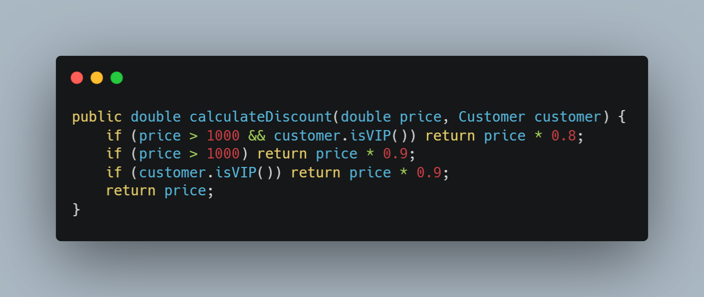
طبعا الفرق واضح ، لسة فيه طرق تانية علشان نقدر نقيس الComplexity تقدر تبص عليها من هنا:
Code Complexity: An In-Depth Explanation and MetricsLearn more about code complexity; what increases code complexity, what the main metrics are that need to be measured, and how to reduce it.Hotspots and Churns
يا تري الكود بتاعك مخبي ايه ؟
الـ Hotspots: دي بتكون اجزاء من الكود بتتغير بشكل مستمر علشان فيه تعديل او اضافة ميزة جديدة للبرنامج . دي ممكن يكون فيه اجزاء Complex او اجزاء محتاجة انها تتصلح و دا طبعا بيستهلك من الـ Memory وعلشان كدا دايما بنحاول نشوف الاجزاء اللي محتاجة تتصلح علشان نحسن من الاداء بتاعها.
الـ Churns: بنعد هنا كام عدد من المرات اللي اتغير فيها فايل معين سواء اضافة جزء او تعديل او تحديث في وقت معين. طيب ازاي نقدر نعرف الفايلات دي ؟
عندنا اداة زي Git& Github تقدر تعمل تتبع لكل فايل موجود في الريبو و تدي تاريخ لكل تغير حصل و من مين و امتي و اتغير كام مرة . كل ما الكود بيتغير كتير كل ما كان ال churn عالي و هيبقي فيه hotspots محتاجة تتحسن.
فمهم اننا نكون مهتمين اننا نتابع تغير الفايل اللي بيتغير كتير بيبقي محتاج تحسين علشان ميسببش مشاكل بعد كدا، و دا شكل التغيرات للفايل اللي بيتعرض علي Github:
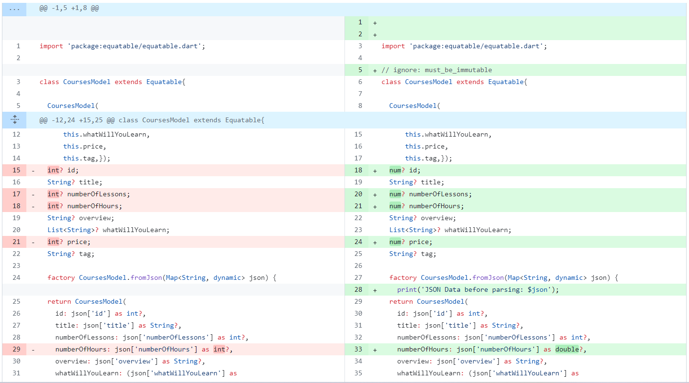
Reliability
هنا بنتأكد ان كل function في الكود شغاله صح و انه لو حصل اي اخطاء غير متوقعة السيستم هيتعامل معاها من غير مشاكل و من غير ما يقف و علشان كدا بنعمل Error Handling علشان نتاكد ان كل حالة هيظهرله فيها رسالة خطأ من غير ما السيستم يقف.
علشان نتاكد من دا بنعمل علي كل فانكشن unit test من الاول علشان نتجنب حدوث اخطاء بعد كدا و ان كل حاجة شغاله بشكل سليم وممكن كمان نستخدم Debugging و Profiling هيطلعلنا الاخطاء من الاول
و في نهاية البروجكت طبعا التيستر بيعمل test كامل للمشروع علشان يتأكد انه مش هيحصل اخطاء مفاجئى علي قدر الامكان.
لو قدرنا نعرف السيستم بيصحله failure كام مرة في وقت معين هنقدر نشوف هو قد Reliable.
Code Coverage
يا تري الكود معمولة تيست بنسبة قد ايه ؟
هو عبارة عن نسبة بيطلعها التيستر بعد ما بيخلص test خالص علشان يقول المنتج دا هينفع نسلمه للعميل و لا لا بناءا علي test cases اللي كتبها و بيقول اي اجزاء من الكود يقدر يحسنها.
النتيجة النهائية بتطلع بناءا علي كذا نوع من الـ Test :
- Unit Test
- Integration Test
- Acceptance Test
تقدر تشوف تفاصيل اكتر عنه هنا :
Code Coverage vs Test Coverage | BrowserStackLearn the difference between Code Coverage vs Test Coverage and how to perform them to measure the effectiveness of application code.Maintainability
ساعات بنحتاج نعدل او نضيف او نحدث فيتشر موجودة في البرنامج طول الوقت علشان تتناسب مع طلبات العميل علشان كدا السيستم لازم يكون سهل انه يتعدل و يتغير من غير ما يعمل اي مشاكل او اخطاء.
نقدر نعمل دا عن طريق كذا حاجة :
- نعمل تعديل للكود كل شوية علشان تمنع التكرار و نخليه واضح .
- التوثيق (Documentation): لازم تكون موثق كل حاجة في الكود عندك بشكل مظبوط الstructure , api و هكذا علشان بيساعد و يوفر وقت علي المطورين انهم يقرؤه و يفهموه بشكل سليم .
- الـ Encapsulation & Abstraction: و دا بيساعد اخفاء تفاصيل التنفيذ و التركيز علي العمليات نفسها و دا بيقلل من المخاطر الغير مقصودة عند التعديل .
خلينا ناخد مثال:
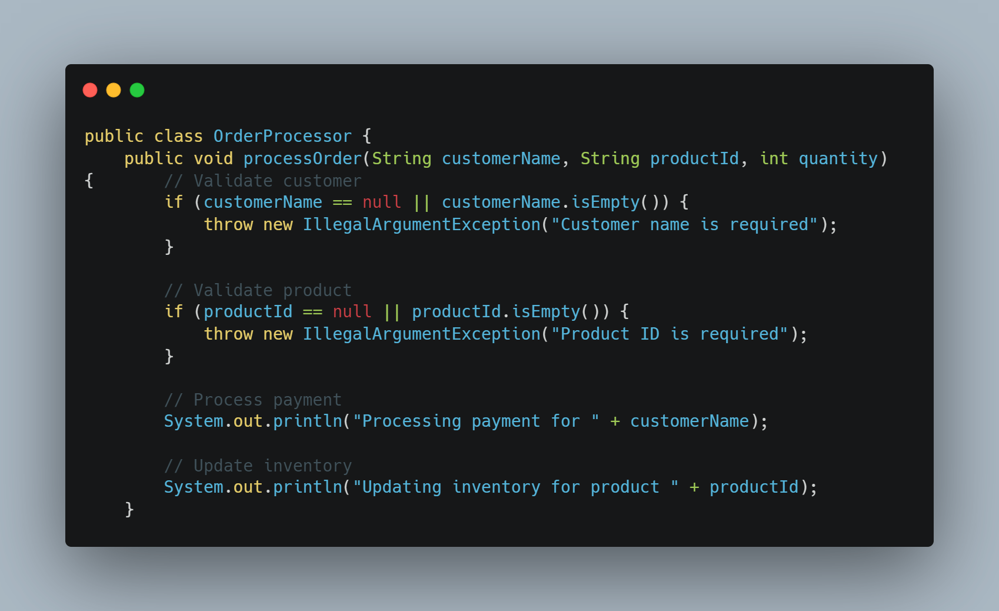
هنا الـ Function بتعمل اكثر من وظيفة لو حبيت اني اضيف او اعدل حاجة البرنامج ممكن يبوظ او ميشتغشل بشكل سليم ، بينام هنا بقي:
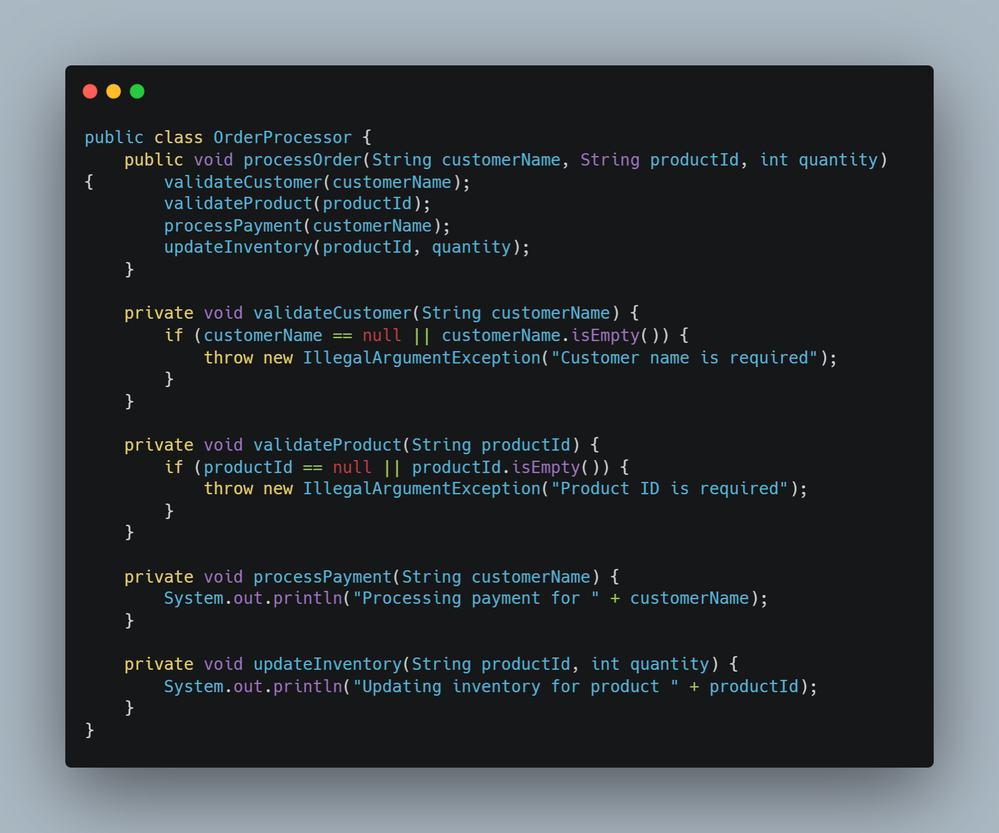
قسمناها لاجزاء اكثر لو عايزة اعدل او اضيف حاجة هيكون الموضوع سهل و بيخلي قرايته احسن و سهل التعديل و الـ Developers يقدروا يشتغلوا عليه اسرع .
Testability
زي ما قلنا انه في 3 انواع من التيست: (unit test - integration test - Acceptance test) يبقي ال Testability معناه مدي سهولة انه نتيست جزء من الكود و يستغل بشكل صحيح من غير ما يطلع اي مشاكل او اخطاء.
لازم نتاكد ان البرنامج شغال بكفاءة و بشكل كويس بدون ما يكون فيه اي اخطاء دلوقت و نحاول نحط في حساباتنا كل السيناريوهات اللي ممكن تتحصل في المستقبل علشان نحاول نتجنبها و نكسب ثقة العميل و نحسن من تجربته .
Readability
زي ما خطنا مفروض يكون انه واضح علشان اي حد يقرأه ويفهمه بسهولة ، الكود برضو لازم كتابته تكون واضحة و قابلة للقراءة من اي ديفيلوبر تاني. طب ازاي نقدر نعمل دا ؟
- التسمية الواضحة (Clear Naming Conventions): لازم التسمية تكون واضحة و معبرة عن اللي مكتوب سواء class او متغير او فانكشن علشان تعبر عن وظيفتها و متبقاش محتاجة شرح.
- الـ Modularity: الكود لازم يكون متقسم لاجزاء صغيرية كل جزء بيعمل وظيفة معينة علشان نقدر نعمله تيست و اصلاح بعدين.
- نمط الكود (Coding Style): خلي بالك من تنسيق الكود المسافات و متنساش تحط تعليقات لو فيه حاجة مش واضحة و محتاجة شرح .
- هيكلة وبنية الكود (Code Structure): لازم نمشي علي structure واضح للكود علشان اللي هيشتغل معاك يعرف يكمل عليه .
- تجنب انك تكتب اي Hard code و متنساش تعمل Error Handling .
خلينا ناخد مثال :
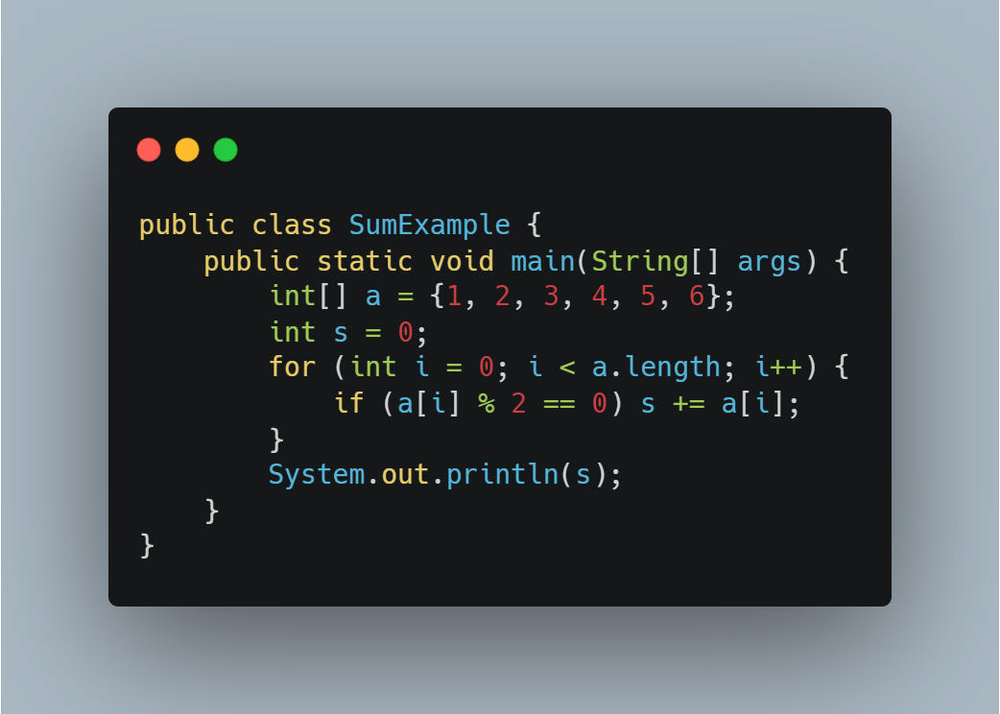
بص كدا تخيل انك بتقرأ فانكشن بسيطة زي دي يعني ايه " a " و "s" دا ؟ ايه هدف الفانكشن دي ؟
طيب هنا نفس الكود كبر بس بقي معبر اكتر و لا لا ؟
الاسماء هتلاقيها معبرة و الـ Functions اتقسمت لاجزاء اصغر علشان كل جزء يعمل وظيفة معينة و ضفنا Comments علشان تشرح وظيفة كل فانكشن.
مهم جدا انك تخلي الكوج بتاعك Self Documented بيعبر عن نفسه من غير شرح و تحسنه طبعا كل شوية.
Reusability
زي ما عندنا الملح في الاكل نقدر نحطه علي كذا اكله ، الكود بتاعنا لازم يكون سهل انه يتعاد استخدامه في كذا مكان تاني في الكود او في بروجكت تاني اصلا من غير ما يحصل اي اخطاء.
طيب ازاي نقدر نتاكد من دا ؟
- نخلي الكود متقسم لاجزاء صغيرة علشان نقدر نستعدي الجزء دا في اي مكان تاني وميكنش معتمد علي جزء تاني.
- تجنب التكرار: لو لقيت انك مكرر الكود اكتر من مرة يبقي كدا فيه مشكلة و لازم تعيد كتابته تاني و تخليه يتكتب مرة واحدة بس .
- اتبع مبادىء SOLID هيساعدك بشكل كبير .
- الـ Encapsualtion and Abstraction: بيخلي قراءة الكود سهلة و المودلز مش معتمدة علي بعض .
خلونا نشوف مثال برضو: لو انا عايزة اعمل 3 ازرار مختلفة في مشروع واحد بس في صفح مختلفة هنكتبه كدا مثلا:
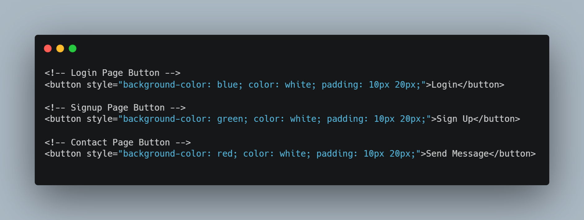
هنا انا كررته 3 مرات باختلاف النص و اللون لو انا عايزة بعد كدا اغير padding هضطر اغيره في واحد واحد و دا مش صح طبعا. الصح بقي هنعمل الزرار دا ك component اقدر استخدمه في كذا مكان مختلف و مش هحتاج اعمل ابديت فيه كل شوية.
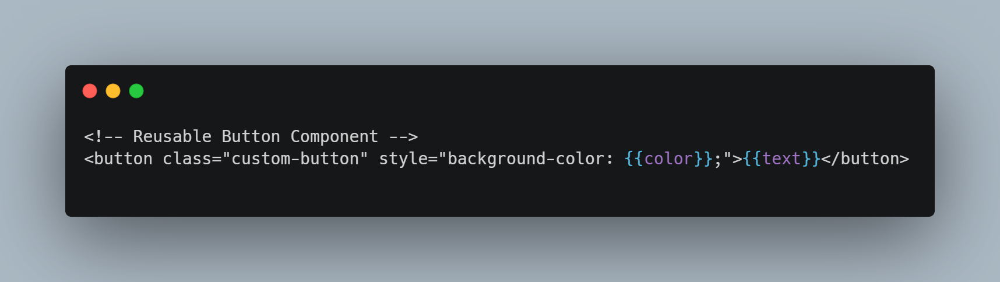
هستخدمه في اي مكان بقي:
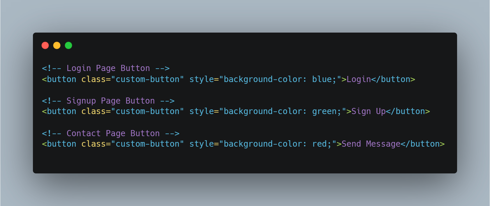
كدا انا وفرت وقت و مجهود و تجنبت انه يحصل اي اخطاء بعد كدا لو حبيت اعدل.
Portability
دي بقي معناها ان السيستم يقدر يشتغل علي اكثر من Platform او Operating System مختلف من غير ما يعمل مشاكل او يكون شكله مختلف. وانه يشتغل مثلا علي Browsers مختلفين من غير اي bugs او انه يشتغل علي Android & IOS من غير ما يكون فيه فرق كبير في الشكل النهائي للبرنامج.
لو مقدرتش انك تخليه يشتغل علي اجهزة مختلفة بشكل مناسب هتضطر انك تعمل كود مخصص لكل Platform و دا طبعا هيزود وقت و تكلفة و مجهود بدون داعي .
Performance
اهم عامل لنجاح المنتج هو الاداء بتاعه عامل ازاي ، كل التعديلات اللي بنعملها و بنحسن الكود بتاعنا علشان نخليه يشتغل باداء عالي و بالتالي هنقدر نقدم Product كويس.
الـ performance هو قياس مدي جودة و كفاءة تنظيم الكود و تحسينه ، ونقدر نقيسه عن طريق الـ Responsive و سرعته و الموارد اللي بيستهلكها من CPU و Memory. وكل ما كان الاداء عالي كل ما كان بيستهلك موارد اقل و بيقدم الخدمة بشكل احسن.
و دي بعض الامثلة اللي ممكن تقلل من اداء البرنامج:
- الصور الغير مضغوطة و اللي مساحتها بتكون كبيرة لازم نتاكد ان حجم الصورة صغير.
- ممكن يكون فيه مكتبات تعمل مشاكل وقت الانتاج او بتقلل من الاداء.
- مبنستخدمش Cache في الـ Browser
- الصور و المكتبات الغير مستخدمة
كل لغة برمجة ليها طريق معينة في تحسين ال performance كل اللي عليك انك تبحث عن "How to Improve Performance in ..."
Duplication
كام مرة بتكرر نفسك ؟
في قاعدة في السوفتوير اسمها DRY بتقول Don't repeat yourself متكررش نفسك معظم الديفيلوبرز بياخدوا الكود كوبي بيست لو لقوا ان فيه جزء في الكود محتاج انه يتكرر مرتين و لكن دا طبعا بيعمل مشاكل كتير منها :
- بيقلل اداء المنتج
- بيعمل مجهود تعديل كبير
- هحتاج اعدل في كل الاجزاء المرتبطة بالفيتشر دي و دا هياخد وقت و مجهود و ممكن يعمل اخطاء و يأثر علي فانكشز تانية شغاله بشكل سليم علشان كدا محتاجين نخلي الحاجات المتكررة shared نستخدمها مرة واحدة علشان نتجنب الاخطاء اللي هتحصل.
Security and Dependencies
اهم جزء و انت بتطلع المنتج بتاعك انك تتأكد انه محمي من الثغرات و الهجوم الامني ، الـ Security هو انك تتتبع مبادىء و ارشادات علشان تحمي الكود بتاعك من اي هجومات او ثغرات امنية.
Dependencies Management Security:
لازم تحدث ال dependencies بتاعتك علشان تتاكد من منع الهجمات اللي ممكن تحصل من خلالها. فلو مستخدمتش مكتبة موثوق فيها ممكن البرنامج بتاعك يحصل فيه مشاكل .
علشان نتاكد من امان التطبيقات ممكن ناخد بالنا من شوية حاجات:
- الـ Input Validation: لازم تتأكد ان اي input field محمي من الSql injection او cross-site scripting
- الـ Authentication and authorization: لازم تتبع خطة كويسة علشان تقدر تتحكم في الصلاحيات ، ممكن تسخدم key cloak دا بيوفر سيكيوريتي عالي في عملية تسجيل الدخول .
- الـ Data Protection: لازم تتأكد انك بتحمي الداتا بتاعتك عن طريق انك بتشفرها او التخزين الامن .
- الـ Security Testing: بعمل اختبارات امنية بشكل منتظم ، بحلل الكود و penetration testing, and vulnerability scanning علشان اقدر اشوف هيحصل فين اختراق و احله
الـ Security مهم جدا علشا لو حصل اي اختراق ممكن يخلي الداتا المهمة تضيع و هتخسر ثقة العميل و ممكن يسبب خساير مالية للشركة طبعا.
Code Style
بشكل بسيط ، الكود بتاعك نضيف قد ايه ؟ فهو مجموعة من الارشادات عن ازاي تنظم الكود بتاعك ، مثلا ازاي تسمي المتغيرات ؟ امتي تستخدم المسافات ؟ ازاي تحط تعليقات ؟ بيدي الكود بتاعك شكل ثابت و منظم بيخليه ممتع للقراءة خصوصا لو وقت الشغل مع تيم.
في ارشادات خاصة طبعا في كل لغة و لكن معظمه بيستخدم formating اللي بتكون مدعومة في الIDES .
هو بيتكون من قرارات صغيرة بناءا علي اللغة:
- ازاي و امتي نستخدم التعليق
- المسافات بتكون قد ايه
- الاسماء تكون واضحة و بتوصف
- تمشي ب pattern محدد
خلينا نشوف مثال بسيط:
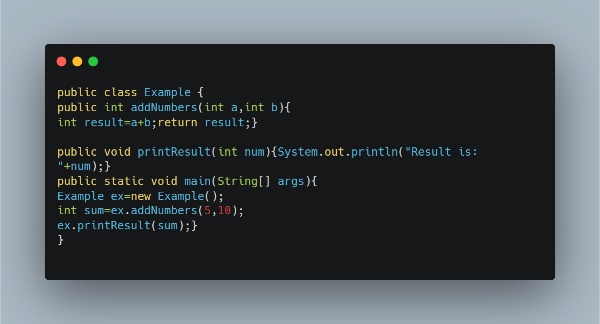
خلينا نشوف النسخة الاحسن منه
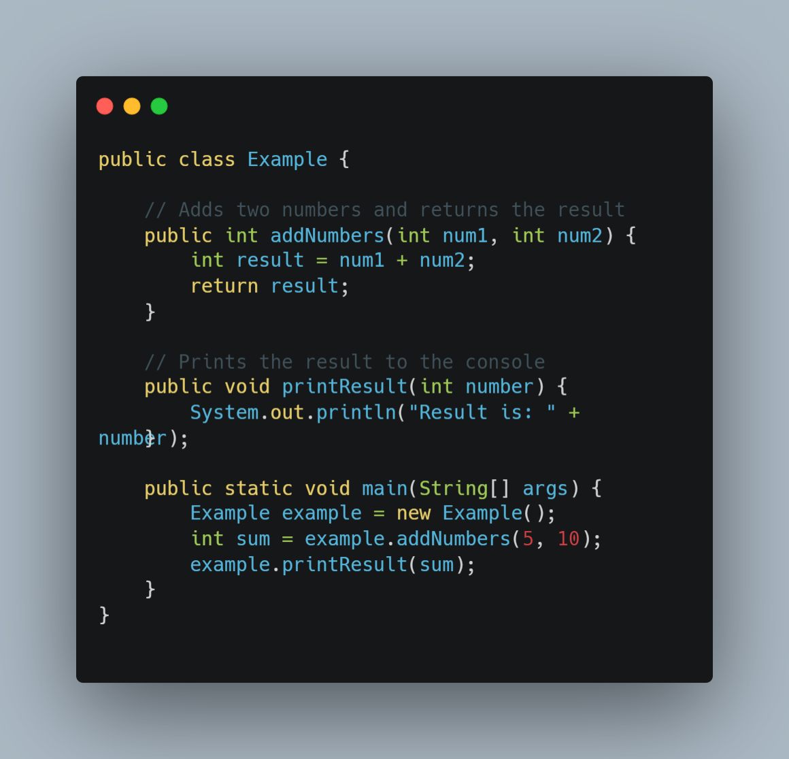
فرق المسافات و التسمية و التعلقيات مدية الكود شكل منظم وواضح تخليك تحب انك تقرأه ، شايف الفرق مذهل ازاي ؟
ادوات لقياس الـ Code Quality
في العالم بتاعنا الملئ بالداتا الارقام بتتكلم اكتر من الكلمات ، علشان كدا فيه ادوات تقدر تحلل الكود عن طريق techniques خاصة بيها وبتقدم تقرير مفصل و رسم بياني عن مدي جودة الكود بتاعي.
كمان يقدروا يعملوا integration مع اي version control زي جت هاب او تقدر تشتغل لوكال علي الجهاز عندك عادي خلونا نتعرف عليهم بالتفصيل:
SonarQube
هي open source tool بتقيس مدي جودة الكود عن طريق انها بتكشتف bugs ,vulnerabilities, code smells, and security hotspots وبيبقي فيها quality profile مخصصة لكل لغة برمجة.
بيكون فيها فيتشر اسمها Sonar Lint اقدر اضيفها ك Extension لل IDE بتاعي و اشتغل Local علشان تحسن من الكود و انا بكتبه.
ازاي بقي بتشتغل ؟
بيكون فيها شوية rules بناءا علي Quality code standards و clean code standards اول ما بعمل Configurations للبروجكت بتاعي مع سيرفر sonarqube.
بنزل بعدها sonar scanner و بسطبه عندي علي الجهاز بعدين بيبدأ يعمل analyze للكود و ياخد roles من server و يطبقها علي الكود عندي و بيطلعلي احصائية في الاخر علي الـ Dashboard.
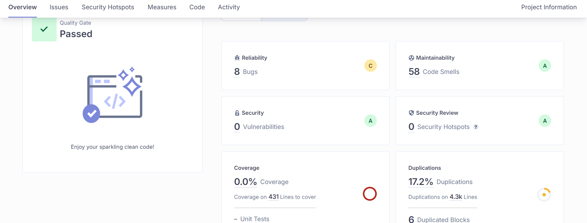
- هنا بيقول انه الكود نجح بس لسة فيه isuues محتاجة تتصلح .
- كمان بيطلع كل issue مفصلة موجودة فين و بسبب ايه و ممكن تتحل ازاي.
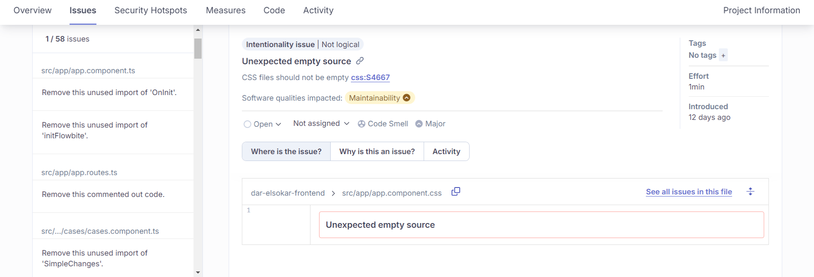
تقدر كمان تضيفه في CI/CD Pipeline لو انت مش عارف دا ايه مش مهم دلوقت عادي تقدر تستخدمه لوحده. وخلي بالك مش كل issues مع كل اللغات هتكون دايما مظبوطة انت بتبص عليهم و تشوف ايه اللي محتاج يتعدل و تعدله.
تقدر تنزله علي winodws , linux , docker , macos الdocumentation كاملة هنا :
SonarQube 10.6SonarQube is a self-managed, automatic code review tool that systematically helps you deliver clean code.دا مصدر كويس ممكن تفهم اكتر منه:
Sonarqube TutorialsVideo’s delen met vrienden, familie en de rest van de wereldCode Climate
هو شبه sonarqube بس اقل دقه منه و مش بيدعم كل اللغات بس ممكن تبص عليه برضو و تجربه :
Software Engineering IntelligenceCode Climate’s industry-leading Software Engineering Intelligence platform helps unlock the full potential of your organization to ship better code,…Code Scene
هي Open Source Tool برضو بتعمل Analyze لكل Commit و فايل موجود علي Repo in GitHub و بتقدر تطلع hotspots and churns. وبتطلع metrics بتخلي الموضوع اسهل علشن نعرف انهي جزء محتاج انه يتحسن في الكود.
وتقدر تنزلها ك extension في IDE ، في الـ Dashboard تقدر تطلع تقرير عن code health و ايه الاجزاء اللي محتاجة تتحسن في الكود.
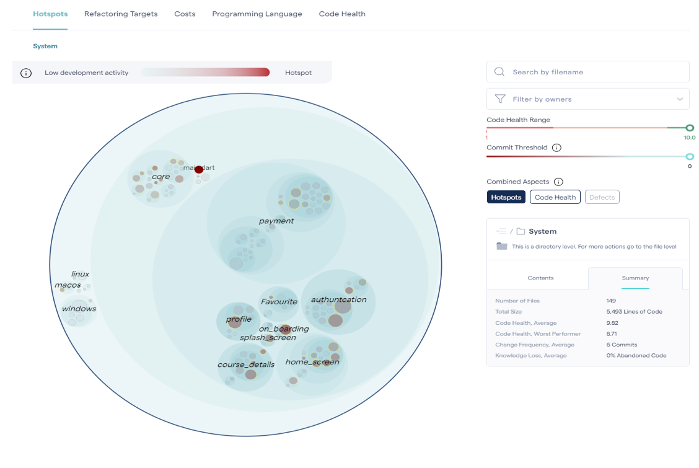
بيعمل تحليل لل Repo بتاعتك ويطلعلك عدد ال commits و authors و غيره
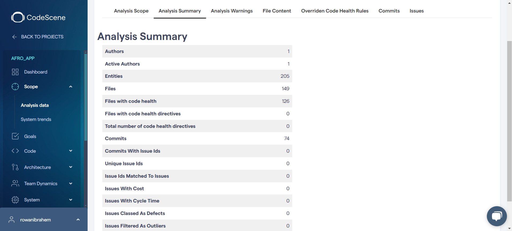
وهتلاقي تفاصيل اكتر اما تفتح تشوفه مش كل المميزات فيه فري و لكن تقدر تجرب اهم الحاجات.
Next generation code analysis | CodeSceneCodeScene is a code analysis and visualization tool. Measure and improve code quality, team dynamics, and delivery. Effectively reduce technical debt, deliver clean code.SNYK
دي بقي Security Platform بتساعد الديفيلوبر انه يلاقي الاجزاء الضعيفة في الكود اللي ممكن تخليه معرض للاختراق. فهي بتحلل الكود و بتقدر تطلع الاماكن الضعيفة و ازاي تقدر تحلها:
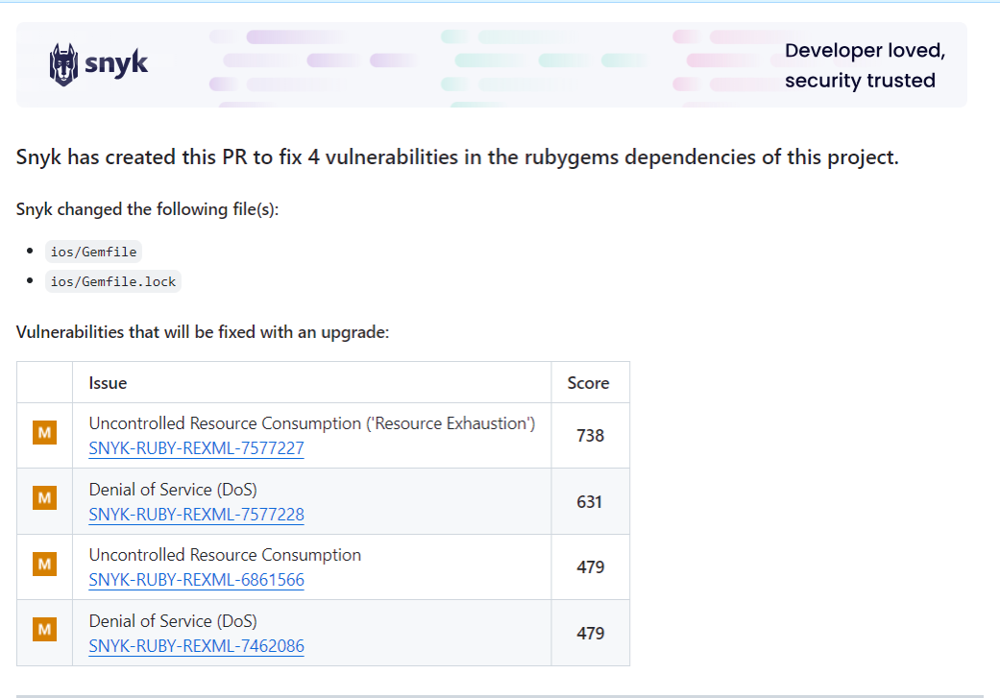
وتقدر تدخل علي لوحة التحكم من هنا:
Developer security | SnykEnable developers to build securely from the start while giving security teams complete visibility and comprehensive controls.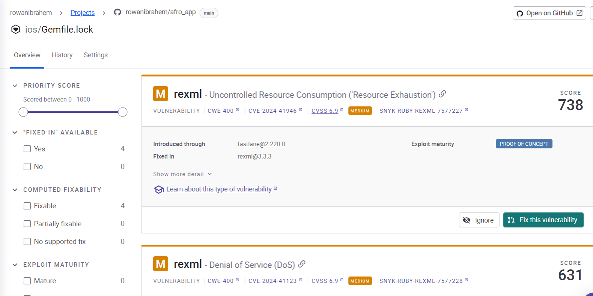
لو عملتها run في terminal البروجكت عندك هتطلعلك كدا:
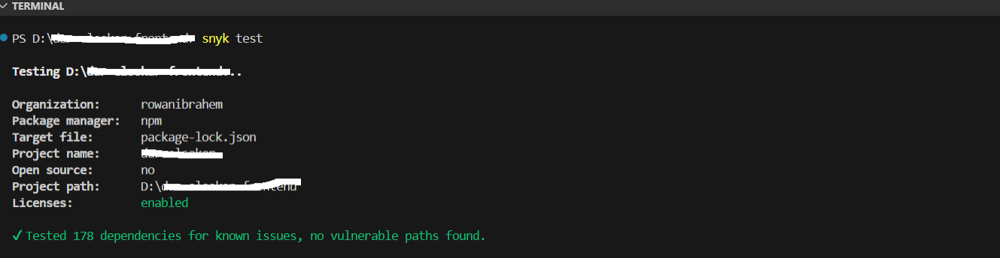
هي بتطلعلك عن dependencies و containers اللي ممكن تعرض الكود للاختراق و لكن مش بتعمل فحص للـ Security عموما فلازم نتأكد منه بنفسنا وتقدر تشوف documentation و ازاي تنزلها من هنا:
Snyk Documentation | Snyk User Docsطبعا منقدرش نعتمد علي الادوات دي بنسبة 100% هي حاجة بتساعدنا بس لازم نعمل code review كل فترة و نقرأ الكود نشوف ازاي تقدر نحسنه كل شوية.
نصائح لتحسين الكود
Dev Tools
- من اكتر الادوات اللي ممكن تفيد الديفيلوبرز علشان يقدر يعمل debugging و يتابع الكود بتاعه باستمرار. وتقدر تشوف البرودكت بتاعك بيستهلك قد ايه من Memory ، CPU واداء التطبيق بتاعك.
- اتبع best practices علي حسب اللغة او الـ Framework اللي انت شغال بيه و دي عبارة عن techniques علشان تطلعلك احسن اداء تقدر تقرأ عنها اكتر من هنا
- امسح الصور و المكتبات اللي مش بتستخدمها علشان تقلل المساحة
- اتأكد انك عامل error handling and logging في الكود عندك
- استخدم الصور ك SVG علشان تقلل السماحة بتاعة الصور و تكون ب جوجة اعلي
- ممكن تعمل CI/CD Pipelines علشان تتأكد ان اي تعديل او اضافة بيتعملها تيست الاول
- دايما خلي البيانات اللي بتستخدمها بشكل متكرر تكون cache علشان تحسن الاداء
- خلي البيانات تحمل asynchronously يعني انها تحمل في الخلفية علشان اليور يقدر يكمل في بقيت الابلكيشن من غير ما يقف علي ما البيانات تحمل
- دايما اقرا الكود و حسن منه باستمرار
- متنساش تعمل documentation للكود بتاعك و تخليه يعبر عن نفسه
- استخدم version control زي GitHub علشان تقدر تتعاون مع التيم و تعملوا code reviews و تعرفوا اي تغير حصل امتي و بسبب مين
- استخدم Linters دي بتساعد تعمل format للكود و بتعمل check علي syntax errors, style violations و اي bugs محتملة. تقدر تسخدم Linter الخاص بكل لغة او تكتب قواعد خاصة بيك.
في النهاية برشح الكتاب دا تقرؤه بتفاصيل اكتر هيفيدك
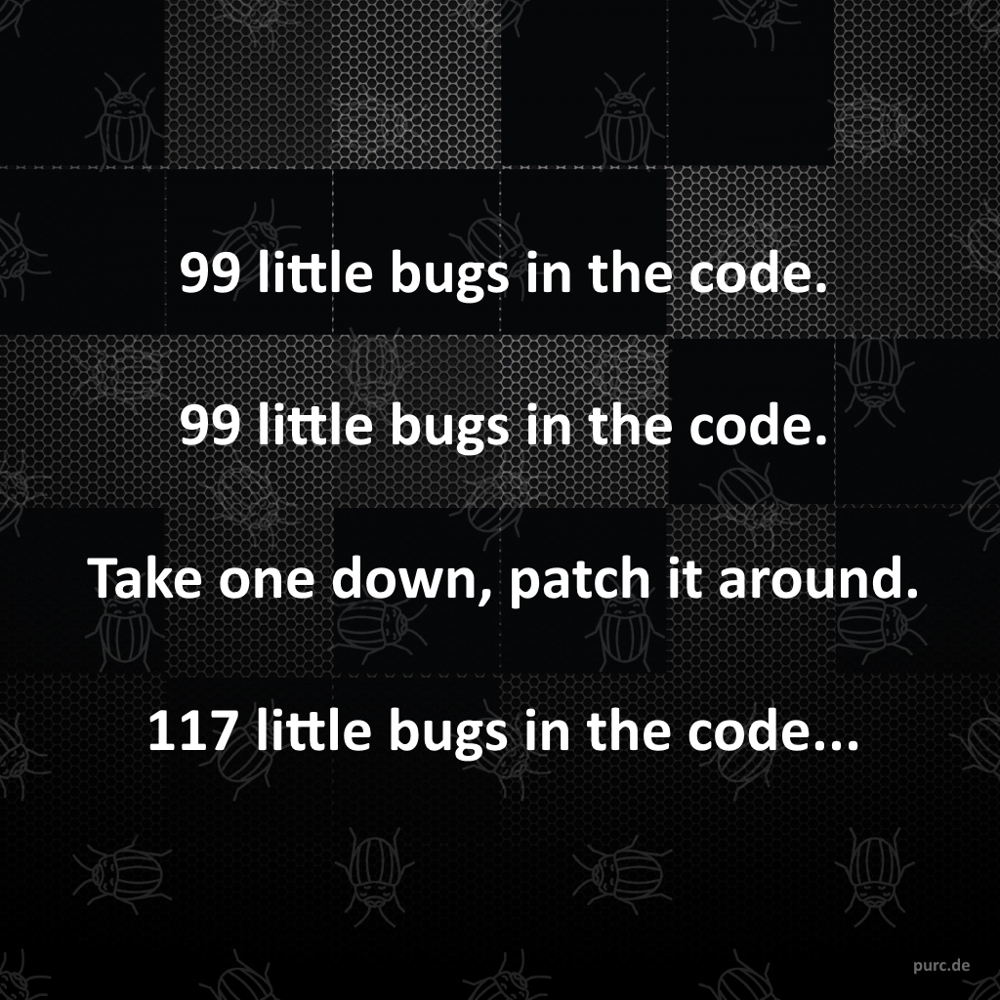
في الختام
مسؤلية قياس ال Code Quality بتكون مهمة كل فرد في التيم من اول الـ Team Lead ، لحد الـ Developer و الـ Tester . فلازم نعمل code review طول الوقت علشان نتاكد ان الكود قابل للاستخدام و سهل الفهم و القراءة علشان يكون سهل علي developers التانيين انهم يقدروا يقروا الكود بسرعة و يتعاونوا فيه بشكل سلس.
انك تعرف مدي جودة الكود بتاعك دا شىء بيجي بالخبرة و التمرن الكتير انك تقرا الكود بتاعك كذا مرة و تعمله test ، ممكن تشوف المشاريع open source تقرأها و تحاول تحسن منها علشان تزود من خبرتك.
جرب كمان تتعلم SOLID Principles , OOP ,Clean code هيسهل عليك وقت كبير في التعلم و هتلاقي انك بتكتب الكود بتاعك بشكل بسيط و منظم.
وخليك فاكر دايما انك علشان تكون software engineer ناجح مش انك تقدم برودكت كويس في الاخر بل انك تطلع software ليه quality عالية نقدر نعدل و نطور فيه من غير اي مشاكل.
دا شيت مجمع اغلب test cases عامة تقدر تستخدمها في اي مشروع:
Production_Testing _Templeteاتمني تكون استفدتوا من الموضوع النهاردة و دي checklist بسيطة مجمعة تقدر ترجعلها في اي وقت:
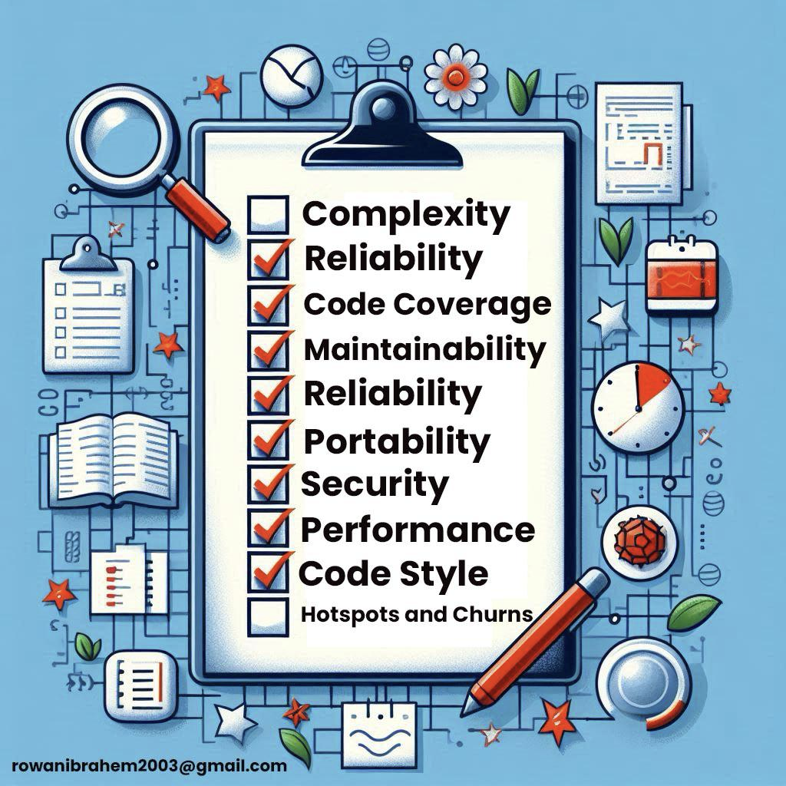